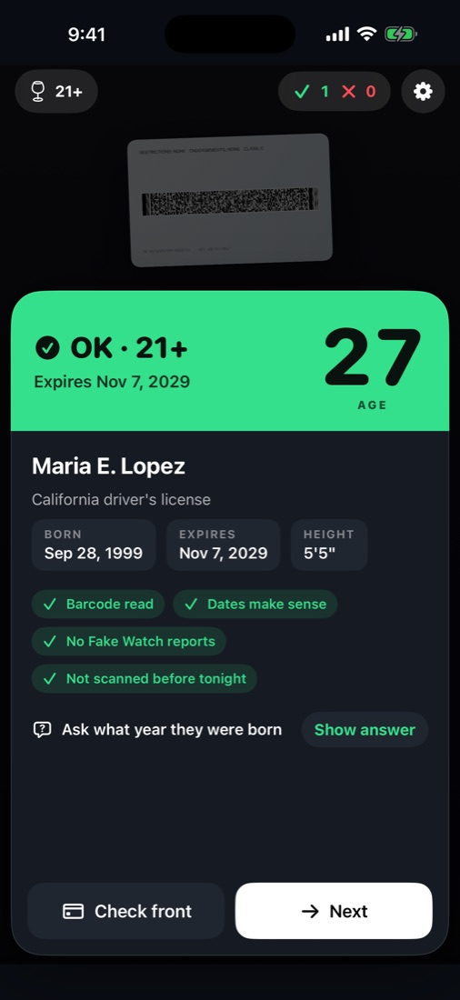
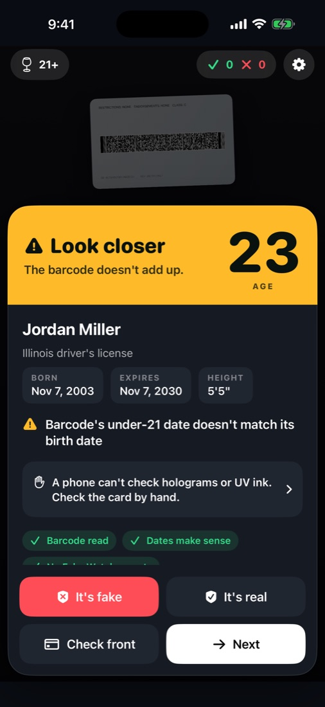
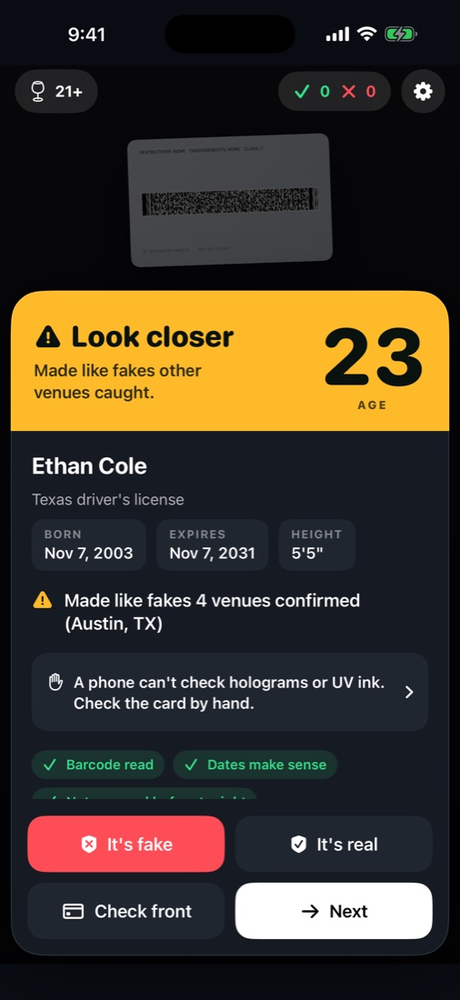
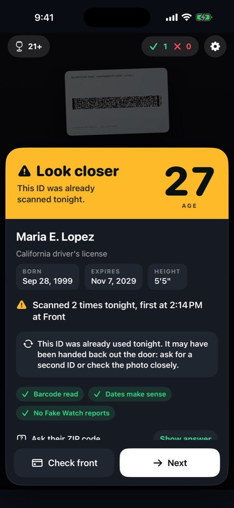
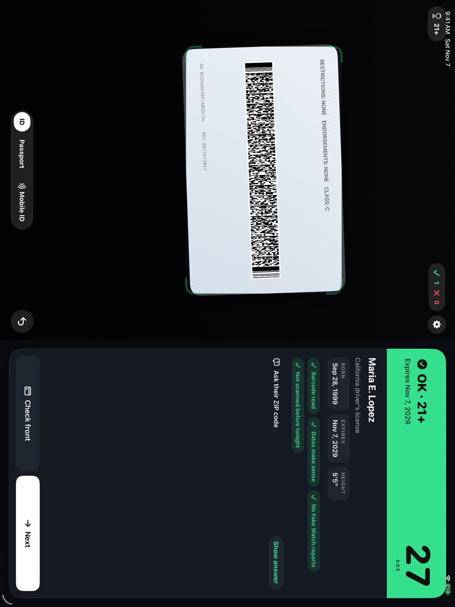

Scan IDs and check age at the door, in a second.
Point the camera at the barcode on the back of a license. Doorproof tells your staff, in color, in words and with a sound, whether they're old enough, whether it's expired, and whether anything about the card doesn't add up.

What the ID scanner checks
Age and expiry
For every US state, DC, the territories and Canada's provinces, counted in your time zone. Under age? It says the day they come of age.
Altered IDs
Barcodes that disagree with themselves: dates in an impossible order, an under-21 date that doesn't match the birth date, an issuer and country that don't go together.
Passed-back IDs
The same ID shown twice in one night, with the time and door of the first scan: the card handed back out the door to a friend.
Fake Watch
When a venue confirms a fake, Doorproof learns how that card's barcode was made (never anything about the person) and warns every venue when a card made the same way turns up.
Passports and Wallet IDs
Passports from the two lines on the photo page, check digits verified. Apple Wallet IDs through Apple's own verifier: signed by the state, they can't be forged.
A question to ask
Their ZIP code, birth year or street, with the answer shown only to staff. Someone holding a borrowed ID often doesn't know.



Honest about what a phone can't do
No phone can check holograms, UV ink or card thickness, and a good fake carries a working barcode. Doorproof never calls a card genuine on its barcode alone. When something doesn't add up, it tells you exactly what, and how to check the card by hand. A barcode it can't read is "check by hand", never "fake". What a scan can and can't tell you.
An age verification station on an iPad
The camera beside the verdict, tonight's counts between guests, and the front camera for a counter stand.

Doorproof Pro
Scan records
A log of every scan that shows if any entry was changed afterward, shared as a PDF or spreadsheet. Kept on your device for the days you choose.
Ban list and VIPs
Matched to the person (name and birth date), not the card, so a banned guest's other ID is caught too.
Wristbands and iPad door mode
Wristband colors by age for 18+ and 21+ events; settings locked on the door iPad; admitted or turned away recorded with each scan.
$9.99 a month or $49.99 a year in the US, each with a free week first. No weekly plan, nothing charged before you've tried it, cancel any time in Settings. Scanning stays free and unlimited without Pro.
Guides to checking IDs
Plain answers for door staff and owners, each linked to its official sources.
- Do ID scanners detect fake IDs?An ID scanner reads the barcode on the back of a license. It catches expired, under-age and altered cards, but a well-made fake has a working barcode. What to check by hand.
- How to check an ID at the doorHow door staff check an ID by hand with the FLAG method California and Virginia teach: feel the card, look at it, ask questions, give it back. Plus what to do with a fake.
- What's in the barcode on a driver's licenseThe barcode on the back of a US or Canadian license is an AAMVA PDF417 symbol. The fields it holds, from DBB date of birth to DDJ under-21 date, and what they tell door staff.
- What is a passed-back ID?A passed-back ID is a real card used twice in one night, handed back out the door to a friend. Why a hand check misses it, and how a record of tonight's scans catches it.
- How to check a passport at the doorHow to check a passport for age at a bar or store: the photo page, the two machine-readable lines defined by ICAO Doc 9303, and the check digits that catch typed-over dates.
Questions and support
Is Doorproof free?
Yes. Scanning is free and unlimited, with pass-back alerts and Fake Watch included, and no account. Doorproof Pro adds scan records, ban and VIP lists, wristbands and iPad door mode for $9.99 a month or $49.99 a year in the US, each with a free week.
Which IDs does it read?
Driver's licenses and ID cards from every US state, DC, the US territories and Canada's provinces, from the barcode on the back. Passports and passport-style ID cards from the machine-readable lines. Apple Wallet IDs through Apple's ID Verifier.
Can Doorproof tell if an ID is fake?
It catches what a barcode can show: expired and under-age cards, altered cards whose barcode no longer adds up, and cards made like fakes other venues confirmed. A well-made fake carries a working barcode, so Doorproof never calls a card genuine on the barcode alone and tells staff what to check by hand.
Which devices does it run on?
iPhone and iPad with iOS 17 or later. It's on the App Store in the United States and Canada, in English and Spanish.
It won't read a card
Hold the back of the card flat, filling the frame, about a hand's width from the camera. In a dark room, tap the flashlight. If a barcode is worn or damaged, Doorproof says "Check by hand": that doesn't mean the card is fake.
It said "Look closer"
The card is old enough and in date, but something doesn't add up, and the result says what. Check the card by hand: tilt it to see the hologram shift, feel for raised print, compare the photo, and ask the question Doorproof suggests.
How do I mark a fake for Fake Watch?
Tap "It's fake" on a Look closer result, but only after checking the card by hand. Doorproof shares how its barcode was made and your city, never anything about the person. If a match was wrong, tap "It's real". You can turn sharing off in Settings.
Can I practice without an ID?
Settings > Help > Practice with sample IDs shows what each result looks like. Samples aren't counted, recorded or shared.
How do mobile IDs work?
Tap Mobile ID and have the guest hold their iPhone near yours. Apple's own screen shows you their name, photo and whether they're over 21, and you approve or turn them away there. It needs a US-region iPhone XS or later.
What does Doorproof keep?
With records off (the default), only tonight's counts. With records on (Pro), a log on your device for as many days as you choose, with names and birth dates only if you turn that on. See the privacy policy.
How do I cancel Doorproof Pro?
In Settings on your iPhone or iPad: your name > Subscriptions > Doorproof Pro. Restore purchases is in the app's Settings.
Still stuck? Email us.
Write to with what happened and your device. We answer within a day.